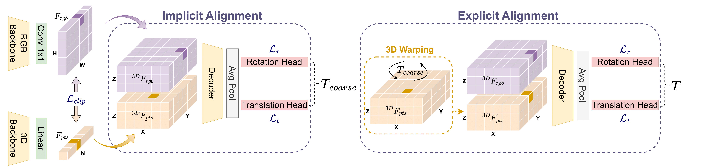

We present CalibBEV, a novel Bird's Eye View (BEV) alignment approach for LiDAR-camera calibration. Our method unifies LiDAR and camera data into a shared 3D spatial representation, enabling accurate and robust cross- modal calibration. CalibBEV extracts sensor-wise BEV features from each modality using domain-specific architectures and estimates the calibration matrix through a two- step alignment process.
First, we perform an implicit alignment by regressing a coarse calibration matrix directly from the BEV features. To ease this alignment, we enforce semantic consistency between BEV representations across modalities using a contrastive loss inspired by CLIP, guiding both networks toward a unified feature space. In the second step, we leverage our BEV formulation to explicitly align the features of one modality with the other, refining the initial coarse estimate into a final, accurate calibration matrix.

Our method demonstrates robustness in LiDAR-camera calibration. Starting from different initial mis-calibration states, CalibBEV consistently recovers a close approximation of the true calibration matrix, showcasing the method's ability to handle various initialization conditions while achieving accurate and reliable calibration results.
Check out our WACV project presentation on YouTube.
@InProceedings{calibbev_wacv2026,
author = {D'Addeo, Filippo and Cipelli, Lorenzo and Cardace, Adriano and Ghelfi, Emanuele and Zinelli, Andrea and Bertozzi, Massimo},
title = {CalibBEV: LiDAR-Camera Calibration via BEV Alignment},
booktitle = {Proceedings of the IEEE/CVF Winter Conference on Applications of Computer Vision (WACV)},
month = {March},
year = {2026},
pages = {4345-4354}
}
We would like to express our sincere gratitude to Adriano Cardace, it's been a great pleasure both working and sharing ideas with you.
We are deeply gratuful to our VisLab supervisors, Emanuele Ghelfi and Andrea Zinelli, whose passion, support and discussions made a significant difference in the process of realization of this work.
Finally, we would like to thank Massimo Bertozzi for his valuable support.
{kind=link}